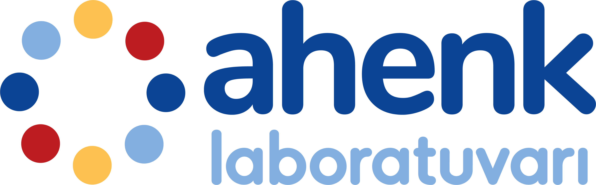
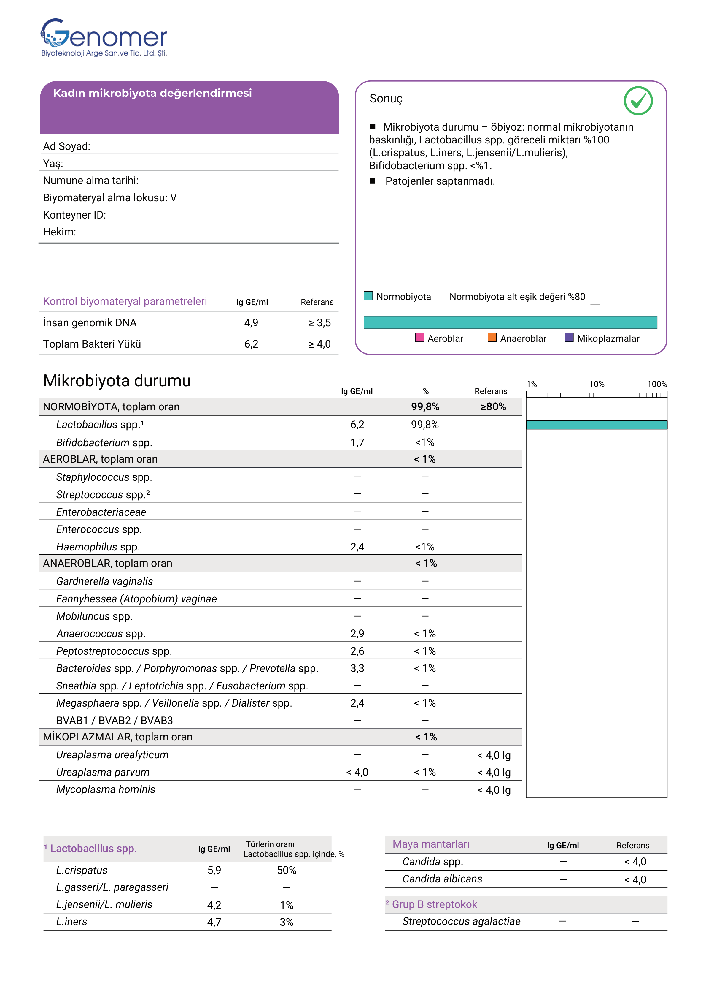
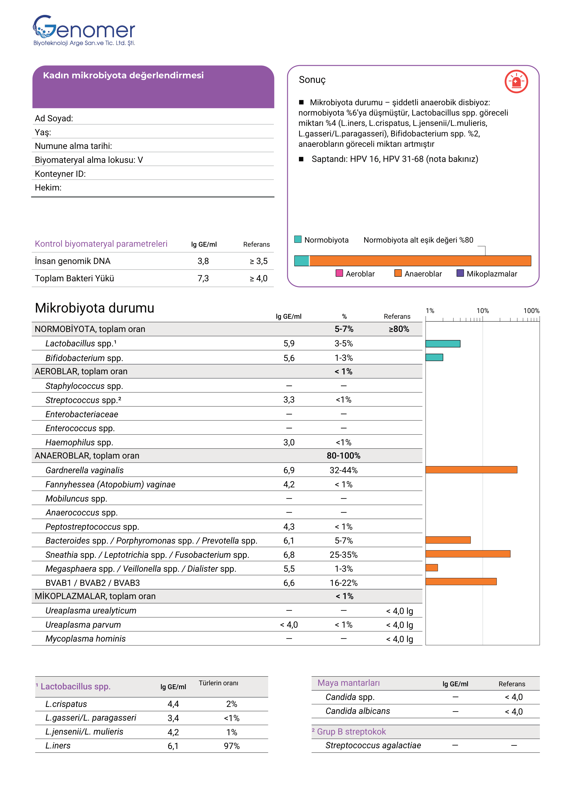
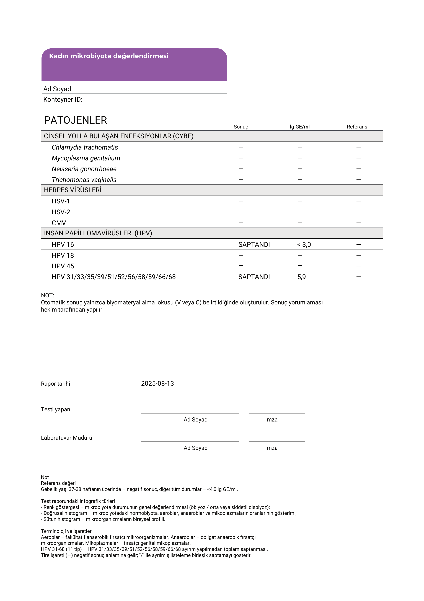

Kadın ürogenital mikrobiyotasının kapsamlı değerlendirilmesine yönelik real-time PCR tabanlı moleküler tanı testi
FEMOBIOME II, kadın mikrobiyotasının kapsamlı değerlendirilmesine yönelik en geniş kapasiteli evrensel real-time PCR testidir. Tek bir testte normobiyota, fırsatçı mikroorganizmalar, zorunlu patojenler, virüsler ve maya mantarlarını kantitatif olarak analiz eder.
Her yaş grubundaki kadınlar için normobiyota durumunun tür düzeyinde ayrıntılı değerlendirmesi; Lactobacillus türlerinin ayrı ayrı kantitasyonu
B Grubu Streptokok (Streptococcus agalactiae) kantitatif analizi – gebelik planlaması ve gebelik döneminde kritik öneme sahip
Asemptomatik ve subklinik enfeksiyonların dışlanması için CYBE etkenlerinin (Chlamydia, Gonore, Trichomonas, M. genitalium) tek testte taranması
Üreme sağlığını etkileyen virüslerin tespiti: HSV-1, HSV-2, CMV ve yüksek riskli HPV tipleri (16, 18, 45 ve 11 ek tip)
Biyomateryal: Servikal kanal ve vajina mukozasından epitel sürüntüsü; sıvı bazlı sitoloji taşıma besiyerinde alınmış servikal sürüntüler; kadın tarafından kendi kendine alınan vajinal numuneler
| Mikroorganizma / Gösterge | Kategori |
|---|---|
| Göstergeler | |
| İnsan genomik DNA'sı | Numune kalite kontrolü |
| Toplam bakteri yükü (TBK) | Genel bakteri kantitasyonu |
| Normobiyota | |
| Lactobacillus spp. | Toplam laktobasil |
| L. crispatus | Tür düzeyinde ayrım |
| L. jensenii / L. mulieris | Tür düzeyinde ayrım |
| L. gasseri / L. paragasseri | Tür düzeyinde ayrım |
| L. iners | Tür düzeyinde ayrım |
| Bifidobacterium spp. | Normobiyota |
| Aeroblar | |
| Staphylococcus spp. | Fırsatçı aerob |
| Streptococcus spp. | Fırsatçı aerob |
| Streptococcus agalactiae (GBS) | Gebelikte kritik |
| Enterobacteriaceae | Fırsatçı aerob |
| Enterococcus spp. | Fırsatçı aerob |
| Haemophilus spp. | Fırsatçı aerob |
| Anaeroblar (BV ile ilişkili) | |
| Gardnerella vaginalis | BV temel göstergesi |
| Fannyhessea vaginae (Atopobium vaginae) | BV göstergesi |
| Mobiluncus spp. | BV göstergesi |
| Anaerococcus spp. | Fırsatçı anaerob |
| Peptostreptococcus spp. | Fırsatçı anaerob |
| Bacteroides spp. / Porphyromonas spp. / Prevotella spp. | Fırsatçı anaerob |
| Sneathia spp. / Leptotrichia spp. / Fusobacterium spp. | Fırsatçı anaerob |
| Megasphaera spp. / Veillonella spp. / Dialister spp. | Fırsatçı anaerob |
| BVAB1 / BVAB2 / BVAB3 | BV göstergesi |
| Mikoplazmalar | |
| Ureaplasma urealyticum | Fırsatçı mikoplazma |
| Ureaplasma parvum | Fırsatçı mikoplazma |
| Mycoplasma hominis | Fırsatçı mikoplazma |
| Maya Mantarları | |
| Candida spp. | Maya mantarı |
| Candida albicans | Tür düzeyinde ayrım |
| Cinsel Yolla Bulaşan Enfeksiyonlar (CYBE) | |
| Chlamydia trachomatis | Zorunlu patojen |
| Mycoplasma genitalium | Zorunlu patojen |
| Neisseria gonorrhoeae | Zorunlu patojen |
| Trichomonas vaginalis | Zorunlu patojen |
| Herpesvirüsler | |
| HSV-1 | Virüs |
| HSV-2 | Virüs |
| CMV | Virüs |
| İnsan Papilloma Virüsleri | |
| HPV 16 | Yüksek riskli HPV |
| HPV 18 | Yüksek riskli HPV |
| HPV 45 | Yüksek riskli HPV |
| HPV 31/33/35/39/51/52/56/58/59/66/68 | Yüksek riskli HPV |
| Klinik Durum |
|---|
| Üreme sistemi enfeksiyonları |
| İnflamasyon belirtileri (akıntı, kaşıntı, koku) |
| Bakteriyel vajinoz (BV) belirtileri |
| Belirti olmayan durumlar |
| Pelvik cerrahi öncesi hazırlık |
| Koruyucu tarama |
| Tedavi takibi |
| Enfeksiyon tedavisi sonrası kontrol |
| BV tedavisi sonrası kontrol |
| Obstetrik |
| Gebelik planlaması, yardımcı üreme teknikleri (YÜT) |
| Gebelikte rutin kontroller |
| İnfertilite, düşük öyküsü |
Tedavi takibi amacıyla antibiyotik kullanan hastalara da test istenebilir. Ancak antibiyotikler sonucu etkileyebilir. Sonuçlar, testin amacı ve hastanın öyküsü göz önünde bulundurularak hekim tarafından değerlendirilmelidir.
Normobiyotanın baskın olduğu, patojen saptanmayan sağlıklı bir mikrobiyota profili örneği. Rapor iki sayfadan oluşmaktadır: ilk sayfa mikrobiyota değerlendirmesi ve grafikleri, ikinci sayfa patojen ve virüs tarama sonuçlarını içerir.

Normobiyota oranı %100; L. crispatus, L. iners ve L. jensenii/L. mulieris tür düzeyinde raporlanır
CYBE etkenleri, herpesvirüsler ve HPV tipleri negatif – tek raporda kapsamlı tarama
Normobiyotanın belirgin şekilde azaldığı, anaerobların arttığı ve HPV pozitifliği saptanan bir disbiyoz profili örneği. Bu senaryo, klinisyenin acil müdahale planlaması için kritik bilgi sağlar.


Normobiyota %6'ya düşmüş; fırsatçı anaerobların oranı belirgin artış göstermektedir
HPV 16 ve HPV 31-68 grubu saptanmış – kantitatif sonuçlar raporda yer almaktadır
| PATOJENLER | |||
|---|---|---|---|
| Var | Yok | ||
| Virüs veya Mikoplazma* ≥ 4 lg veya Candida** ≥ 4 lg Var |
Yok | ||
| Öbiyoz (Eubiosis) | |||
| Orta derece disbiyoz | |||
| Ağır disbiyoz | |||
Trafik ışığı sistemine göre mikrobiyota durumu ve patojen varlığının görsel özeti
Mikrobiyota içindeki normobiyota, anaeroblar, aeroblar ve mikoplazmaların oranlarının grafiksel gösterimi
Fırsatçı patojenlerin kendi grupları içindeki dağılımını gösteren ayrıntılı mikroorganizma profili